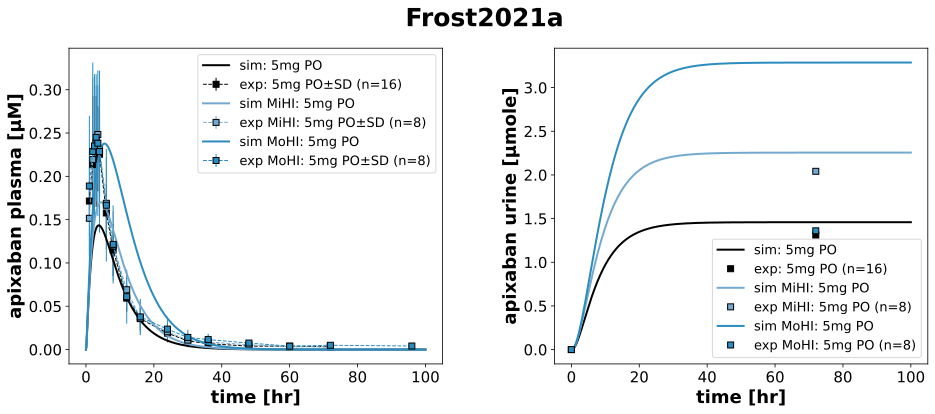
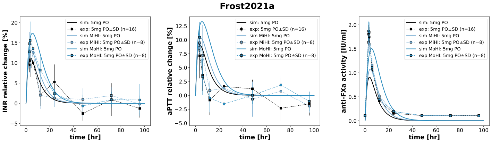
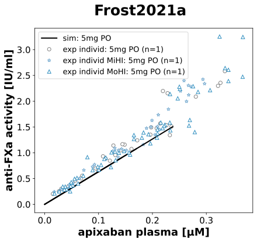

|
 |
|
 |
|
 |
../../../../experiments/studies/frost2021a.py
import math
from typing import Dict
from sbmlsim.data import DataSet, load_pkdb_dataframe
from sbmlsim.fit import FitMapping, FitData
from sbmlutils.console import console
from pkdb_models.models.apixaban.experiments.base_experiment import (
ApixabanSimulationExperiment,
)
from pkdb_models.models.apixaban.experiments.metadata import (
Tissue, Route, Dosing, ApplicationForm, Health, Fasting, ApixabanMappingMetaData
)
from sbmlsim.plot import Axis, Figure
# noqa: E402
from sbmlsim.simulation import Timecourse, TimecourseSim
from pkdb_models.models.apixaban.helpers import run_experiments
class Frost2021a(ApixabanSimulationExperiment):
"""Simulation experiment of Frost2021a."""
groups = ["healthy", "mild", "moderate"]
groups_short = {
"mild": "MiHI",
"moderate": "MoHI",
}
colors = {
"healthy": ApixabanSimulationExperiment.cirrhosis_colors["Control"],
"mild": ApixabanSimulationExperiment.cirrhosis_colors["Mild cirrhosis"],
"moderate": ApixabanSimulationExperiment.cirrhosis_colors["Moderate cirrhosis"],
}
bodyweights = {
"healthy": 77.6,
"mild": 86.1,
"moderate": 83.8,
}
bodyheights = {
"healthy": math.sqrt(77.6 / 27.4),
"mild": math.sqrt(86.1 / 29),
"moderate": math.sqrt(83.8 / 28.4),
}
cirrhosis = {
"healthy": ApixabanSimulationExperiment.cirrhosis_map["Control"],
"mild": ApixabanSimulationExperiment.cirrhosis_map["Mild cirrhosis"],
"moderate": ApixabanSimulationExperiment.cirrhosis_map["Moderate cirrhosis"],
}
renal_function = {
"healthy": 114.61 / 114.61, # taken as reference value
"mild": 122 / 114.61,
"moderate": 111.68 / 114.61,
}
markers = {
"healthy": "o",
"mild": "*",
"moderate": "^",
}
def datasets(self) -> Dict[str, DataSet]:
dsets = {}
for fig_id, group_id in zip(["Fig1", "Fig3", "Fig2a", "Fig2b", "Tab2"],
["label", "label", "x_label", "label", "label"]):
df = load_pkdb_dataframe(f"{self.sid}_{fig_id}", data_path=self.data_path)
for label, df_label in df.groupby(group_id):
dset = DataSet.from_df(df_label, self.ureg)
if label.startswith("apixaban_"):
if fig_id == "Fig2a":
dset.unit_conversion("x", 1 / self.Mr.api)
else:
dset.unit_conversion("mean", 1 / self.Mr.api)
if not fig_id == "Tab2":
dsets[label] = dset
if label.startswith("cumulative amount"):
dset["mean"] = dset["geomean"]
dset.unit_conversion("mean", 1 / self.Mr.api)
dsets[label] = dset
# console.print("datasets:", list(dsets.keys()))
return dsets
def simulations(self) -> Dict[str, TimecourseSim]:
Q_ = self.Q_
tcsims: Dict[str, TimecourseSim] = {}
for group in self.groups:
tcsims[group] = TimecourseSim([
Timecourse(
start=0,
end=100 * 60, # [min]
steps=1000,
changes={
**self.default_changes(),
"PODOSE_api": Q_(5, "mg"),
"BW": Q_(self.bodyweights[group], "kg"),
"f_cirrhosis": Q_(self.cirrhosis[group], "dimensionless"),
"HEIGHT": Q_(self.bodyheights[group], "m"),
"KI__f_renal_function": Q_(self.renal_function[group], "dimensionless"),
},
)
])
return tcsims
def _pk_labels(self):
return [k for k in self._datasets.keys()
if (((k.startswith("apixaban_") and k.endswith("_log"))) or (k.startswith("cumulative"))) and not k.startswith("apixaban_vs_xa_")]
def _pd_labels(self):
return [k for k in self._datasets.keys()
if k.startswith("inr_") or k.startswith("aPTT_") or k.startswith("xa_")]
def _scatter_labels(self):
return [k for k in self._datasets.keys()
if k.startswith("apixaban_vs_xa_")]
@staticmethod
def _label_to_group(dset_label: str, groups=("healthy", "mild", "moderate")) -> str:
for g in groups:
if dset_label.endswith(f"_{g}") or dset_label.endswith(f"_{g}_log"):
return g
return "healthy"
@staticmethod
def _label_to_observable(dset_label: str) -> str:
if dset_label.startswith("apixaban_"):
return "[Cve_api]"
if dset_label.startswith("cumulative amount"):
return "Aurine_api"
if dset_label.startswith("inr_"):
return "INR"
if dset_label.startswith("aPTT_"):
return "aPTT"
if dset_label.startswith("xa_") or dset_label.startswith("apixaban_vs_xa_"):
return "antiXa_activity"
# Fit Mappings
def fit_mappings(self) -> Dict[str, FitMapping]:
mappings: Dict[str, FitMapping] = {}
all_labels = self._pk_labels() + self._pd_labels() + self._scatter_labels()
scatter_set = set(self._scatter_labels())
for dset_label in all_labels:
observable_id = self._label_to_observable(dset_label)
if observable_id == "INR":
observable_id = "INR_relchange"
elif observable_id == "aPTT":
observable_id = "aPTT_relchange"
group_of_label = self._label_to_group(dset_label, self.groups)
is_scatter = dset_label in scatter_set
if is_scatter:
continue
ref_xid = "x" if is_scatter else "time"
ref_yid = "y" if is_scatter else "mean"
ref_yid_sd = "" if is_scatter else "mean_sd"
obs_xid = "[Cve_api]" if is_scatter else "time"
# # FIXME: set obs_yid correctly for scatter
mappings[f"fm_po_{dset_label}"] = FitMapping(
self,
reference=FitData(
self,
dataset=dset_label,
xid=ref_xid,
yid=ref_yid,
yid_sd=None if observable_id == "Aurine_api" else ref_yid_sd,
count="count",
),
observable=FitData(
self,
task=f"task_{group_of_label}",
xid=obs_xid,
yid=observable_id,
),
metadata=ApixabanMappingMetaData(
tissue=Tissue.URINE if observable_id == "Aurine_api" else Tissue.PLASMA,
route=Route.PO,
application_form=ApplicationForm.TABLET,
dosing=Dosing.SINGLE,
health=Health.HEALTHY if group_of_label == "healthy" else Health.HEPATIC_IMPAIRMENT,
fasting=Fasting.FED,
),
)
return mappings
def figures(self) -> Dict[str, Figure]:
return {
**self.figure_pk(),
**self.figure_pd(),
**self.figure_scatter(),
}
def figure_pk(self) -> Dict[str, Figure]:
fig = Figure(
experiment=self,
sid="PK",
name=f"{self.__class__.__name__}",
num_cols=2,
num_rows=1,
height=self.panel_height,
width=self.panel_width * 2,
)
plots = fig.create_plots(
xaxis=Axis(self.label_time, unit=self.unit_time),
legend=True,
)
plots[0].set_yaxis(self.labels["[Cve_api]"], unit=self.units["[Cve_api]"], scale="linear")
plots[1].set_yaxis(self.labels["Aurine_api"], unit=self.units["Aurine_api"], scale="linear")
# Data
for dset_label in self._pk_labels():
group = self._label_to_group(dset_label, self.groups)
kp = 1 if dset_label.startswith("cumulative amount") else 0
plots[kp].add_data(
task=f"task_{group}",
xid="time",
yid="[Cve_api]" if kp == 0 else "Aurine_api",
label="sim: 5mg PO" if group == "healthy" else f"sim {self.groups_short[group]}: 5mg PO",
color=self.colors[group]
)
plots[kp].add_data(
dataset=dset_label,
xid="time",
yid="mean",
yid_sd=None if kp == 1 else "mean_sd",
count="count",
label="exp: 5mg PO" if group == "healthy" else f"exp {self.groups_short[group]}: 5mg PO",
color=self.colors[group],
linestyle="dashed" if kp == 0 else "",
)
return {fig.sid: fig}
def figure_pd(self) -> Dict[str, Figure]:
fig = Figure(
experiment=self,
sid="PD",
name=f"{self.__class__.__name__}",
num_cols=3,
height=self.panel_height,
width=self.panel_width * 3 * 1.05,
)
plots = fig.create_plots(
xaxis=Axis(self.label_time, unit=self.unit_time),
legend=True,
)
cfg = {
0: ("INR_relchange", "inr_"),
1: ("aPTT_relchange", "aPTT_"),
2: ("antiXa_activity", "xa_"),
}
for kp in range(3):
observable_id, prefix = cfg[kp]
y_unit = self.units.get(observable_id, None)
plots[kp].set_yaxis(
self.labels.get(observable_id, observable_id),
unit=y_unit,
scale="linear",
)
for dset_label in self._pd_labels():
if dset_label.startswith(prefix):
group = self._label_to_group(dset_label, self.groups)
plots[kp].add_data(
task=f"task_{group}",
xid="time",
yid=observable_id,
label="sim: 5mg PO" if group == "healthy" else f"sim {self.groups_short[group]}: 5mg PO",
color=self.colors[group],
)
plots[kp].add_data(
dataset=dset_label,
xid="time",
yid="mean",
yid_sd="mean_sd",
count="count",
label="exp: 5mg PO" if group == "healthy" else f"exp {self.groups_short[group]}: 5mg PO",
color=self.colors[group],
)
return {fig.sid: fig}
def figure_scatter(self) -> Dict[str, Figure]:
fig = Figure(
experiment=self,
sid="PD_scatter",
name=f"{self.__class__.__name__}",
height=self.panel_height,
width=self.panel_width * 0.87,
)
plots = fig.create_plots(
xaxis=Axis(self.labels["[Cve_api]"], unit=self.units["[Cve_api]"]),
legend=True,
)
plots[0].set_yaxis(self.labels["antiXa_activity"], unit=self.units["antiXa_activity"], scale="linear")
is_legend = True
for dset_label in self._scatter_labels():
group = self._label_to_group(dset_label, self.groups)
plots[0].add_data(
task=f"task_{group}",
xid="[Cve_api]",
yid="antiXa_activity",
label="sim: 5mg PO" if is_legend else "",
color="black",
linestyle="solid",
)
is_legend = False
plots[0].add_data(
dataset=dset_label,
xid="x",
yid="y",
count="count",
label="exp individ: 5mg PO" if group == "healthy" else f"exp individ {self.groups_short[group]}: 5mg PO",
linestyle="",
marker=self.markers[group],
color="white",
markeredgecolor="tab:grey" if group == "healthy" else self.colors[group],
markeredgewidth=1,
)
return {fig.sid: fig}
if __name__ == "__main__":
run_experiments(Frost2021a, output_dir=Frost2021a.__name__)
{kind=link}
{kind=link}
{kind=link}